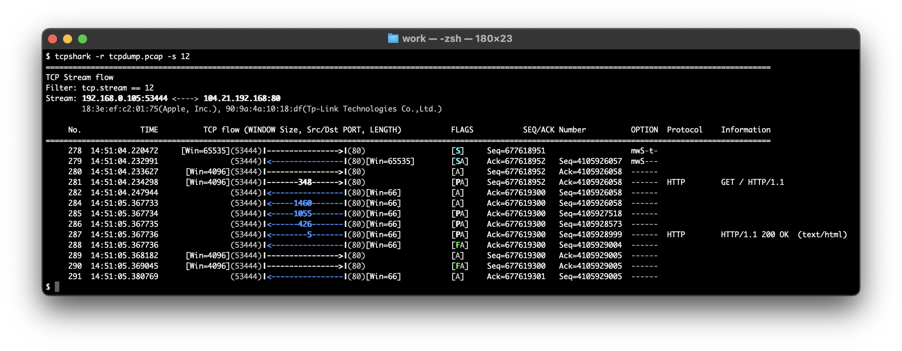

TcpShark
TCP の解析に特化したパケットアナライザです。

説明を隠す
TcpShark は、Wireshark を解析エンジンとした CLI ツールです。
説明を隠す
ネットワークのトラブルシューティングでは、パケット解析による調査が不可欠です。ただし、Wireshark を使用したとしても、大容量かつ複雑化する TCP ストリームの解析には職人的なスキルと経験を必要とするでしょう。
このツールで TCP ストリームのパケットフローをグラフィカルに表示することにより、誰でもエンドツーエンドのデータの流れを容易に把握することができます。
Wireshark を補完するツールとして、TcpShark はあなたのトラブルシューティングの手助けになるでしょう。
特長
- 独自フォーマット データサイズ、ウィンドウサイズ、SEQ/ACK 番号を整然と表示することで、TCP ヘッダの各フィールドの推移・変化を読み取りやすくなります。
- 直感的なデザイン パケット方向、TCP フラグ（SYN、RST など）、Analysis 情報（パケロス、再送 など）を色分けして表示することで、大容量のキャプチャデータにおいても異常に気付きやすくなります。
- カスタマイズ可能 Wireshark がサポートする各種プロトコルフィールド（HTTPリクエストURI、HTTPステータスコード など）を追加表示することで、TCP 以外のプロトコル情報と関連付けて解析できます。
導入方法
- 下のリンクからファイル 'tcpshark.txt' をダウンロード
- ファイル名から拡張子 '.txt' を削除
- README.md を参照してセットアップ
更新履歴
| 更新日 | バージョン | 更新内容 / MD5 |
|---|---|---|
| 2022.01.09 | 2.5.2 | TCPSHARK_WIRESHARK_OUIFILE 変数を削除 |
| d76039981c530e25562a2b67da360441 | ||
| 2022.01.09 | 2.5.0 | 新機能（-i オプション） |
| 24c0224320bb1ca28adbd22c8055b749 | ||
| 2022.01.08 | 2.4.6 | バグ修正（Bug: Some MAC addresses is not displayed in flow mode.） |
| a52b49c2621d8e5efe7b7fb436dbf5fb | ||
| 2022.01.08 | 2.4.5 | バグ修正（Bug: Hang-up may occur.） |
| 9f00733cf6e397630c601197d29dbbea | ||
| 2022.01.06 | 2.4.4 | バグ修正（Bug: Segmentation fault occurs with using TCPSHARK_EXECUTION_USER in macOS.） |
| e240a1416014c8f3b20b63838db1ec34 | ||
| 2022.01.06 | 2.4.3 | TCPSHARK_AWK_COMMAND 変数を削除 |
| 7f6f07980fe82137f42f5bdd146fcb33 | ||
| 2022.01.06 | 2.4.1 | バグ修正（Bug: Not checked if 2nd custom field is supported.） |
| 267b3adfaf5853ccb073d56d0c9c78ad | ||
| 2022.01.02 | 2.4.0 | 新プラットフォームに対応（Windows） |
| 7b77c7b3c786da4a0d60f4e329cfc081 | ||
| 2021.12.30 | 2.3.0 | カスタムフィールドを2回指定可能に変更（flow mode） |
| d353c1fe8b097c44fce0c573ecfd4f14 | ||
| 2021.12.29 | 2.2.0 | 新機能（-x オプション） |
| 8bbb1cb4e55f6c8d013e714679b2b799 | ||
| 2021.12.26 | 2.1.0 | 新機能（-e オプション） |
| c3a496b403d5b1a43def6867c8eff8a3 | ||
| 2021.12.25 | 2.0.0 | 新モードを追加（one mode: -n オプション） |
| 27095bc1aa105811deda44d0c3f5350a | ||
| 2021.12.13 | 1.0.3 | オプション名を変更（-x => -z） |
| 4455e1f39ab93c701654bf2e079aa13e | ||
| 2021.12.05 | 1.0.1 | バグ修正（Bug: -C option doesn't work if TCPSHARK_APPEARANCE is set.） |
| 96bbceb985f3a17ffb90995713164434 | ||
| 2021.12.03 | 1.0.0 | 初版 |
| d48f178a34107cd67a02945e595a1452 |


TcpShark は、Linux/Solaris/macOS/Windows のターミナル上で動作します。
© 2022 manabapp.
English | 日本語
English | 日本語